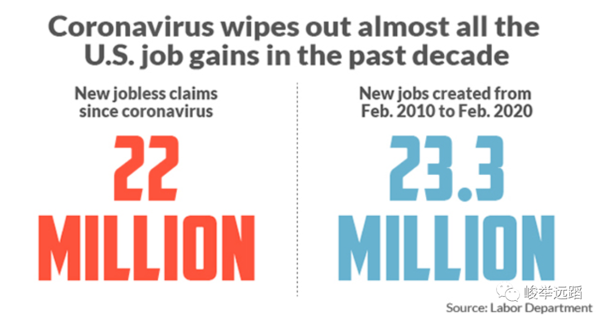

收录于合集
点击蓝字关注我们
来源：‘峻举远蹈“（ID:usage2020）
这场自一月开始的疫情开始席卷美国，逐渐从公共卫生领域进入金融领域，白宫政府的掉以轻心为美国经济带来了难以估量的打击。餐馆、电影院、健身房、娱乐中心等室内人员聚集的行业被迫停业，数以万计的人们一夜之间失去了工作，与其相关的行业也受到沉重打击。这场失业潮发展迅速，人们几乎来不及做任何准备，这在美国历史上是罕见的。
新冠病毒在美国扩散一个月就几乎摧毁了美国经济用了10年时间才创造的2300万个新就业机会。美国政府公布，4月第二周又有525万人申请失业救济金，使过去一个月新增失业救济金人数达到2200万人。从信息推断，华尔街的经济学家估计失业率已经跃升至创纪录的15%甚至更高。

图片截自美国劳工部
美国劳工部在4月2日公布一组可怕的数字，即大约有20万美国人在3月最后两周申请失业，3月最后一周，有超过660万美国人申请失业救济，截至3月28日，3月份美国有超过1000万人失业并申请了政府援助，由于还有许多刚失业的美国人暂时不能填写失业救济申请，所以失业人数比实际更多。在劳工部公布这组可怕的数字之后，盖洛普拿出自己3月27日至2020年3月31日收集的调查数据说明实际情况要比劳工部公布的更加糟糕，由于新冠病毒，估计已经有4600万美国人被裁员或减少了工作时间。这大约占全部工人的28%和所有成年人的19%。此外，独立承包商，包括许多职业经济工作者，很有可能失业但没有资格享受福利，这一类人群很难计算有多少人。由于劳工部对失业的定义原因，这些失业人数不太可能记录在联邦机构的官方数据中。受影响最严重的行业是艺术、设计、娱乐、体育、餐饮、住宿、零售和交通。
随后特朗普总统签署了一项两万亿美元的经济救助计划，向受新冠病毒大流行影响的数千万美国家庭提供援助。它的组成部分包括对个人的刺激性支出、扩大失业救济金、改变学生贷款、不同的退休账户规则等等。但是由于美国政府是单独统计就业岗位、失业人数和救济金领取数量等数据的，所以对于救助计划的金额和落实速度许多经济学家也提出了疑问，偏左非营利政策组织城市研究所的研究员玛丽·坎宁安（Mary Cunningham）表示，低收入房客面临被驱逐的高风险。她说：“最近的一项两万亿美元的经济救助计划，不足以解决将近1100万低收入房客家庭的住房问题，这些家庭的收入中有一半以上用来支付房租。”房东在线资源Avail调查显示，超过一半（53.5％）的租户报告称他们失去了工作，美国住房相关部门跟踪了1,340万套公寓的数据，发现31％的房客在4月的第一周没有支付房租，而去年这一比例为19％。
联邦政府防止大规模失业的第一个也是最好的机会是通过一个核酸检测和一些亚洲国家实施的有针对性的隔离来控制新冠病毒。即使在特朗普政府显然未能做好应对这一流行病的准备之后，政策制定者仍然可以选择优先考虑就业问题，在封锁期间向公司支付工资，让员工继续保有工作。一些欧洲国家在同样未能控制病毒传播，从而被迫封锁大部分经济之后，选择了保护就业。丹麦已经同意赔偿丹麦雇主高达90%的工人工资，荷兰面临大于20%收入损失的公司同样可以申请政府支付90%的工资。英国宣布将为需要帮助的公司支付高达80%的工资，并且不限制公共开支总额。有些国家只向雇主支付不工作的工人的工资。德国的计划显示政府甚至为兼职工人提供保障。无论是哪种情况，他们的目标都是保住现有工作岗位上的人——为了工人和公司的利益，尽可能地保持经济的固有结构。
保住工作岗位很重要，因为工作不仅仅是为了钱。有偿劳动提供了一种独立感、身份感和目的感；失业金并不能取代这些东西。失业的人也会失去原有福利——在美国，这包括他们的医疗保险。对早期经济衰退的大量研究表明，即使失业者最终找到了新工作，也会对他们的收入潜力、健康甚至孩子的前途造成持久的损害。
长期以来，美国企业一直在努力争取在经济衰退期间最大限度地自由裁员，美国经济学家也倾向于同意这一观点，他们认为，这样有助于调整资源配置，使实力较弱的企业收缩，实力较强的企业成长。这场衰退并不是那些信奉这一理论的人喜闻乐见的周期性自由市场“创造性破坏”的例子——这是一场公共卫生危机。这个国家病了，需要休息一会儿。但没有明显的理由认为经济会受益于大规模失业带来的巨大经济转变。这种经济收缩并不是由房地产行业或华尔街的赌博造成的。这是由一种病毒的到来造成的，一旦这种流行病过去，保持公司和工人之间的联系有助于加快最终的经济复苏。
在疫情爆发之前，特朗普竞选连任的核心目标之一就是他对当前美国的经济繁荣具有贡献。疫情几乎摧毁了美国近十年的经济成就，股市遭受重大损失，失业率大幅上升，疫情前期，面对严峻的经济形式，大多数人报以同情的态度来面对，从特朗普的民调支持率在前期上升也可以看出，总统的领导形象是国家遇到重大事件的受益者，但是随着疫情的持续，特朗普政府的应对措施被越来越多的民众所诟病，当被问到拜登和特朗普谁更被信任来处理疫情时，大部分被调查者选择了当前只能在地下室直播的拜登（45%）而不是特朗普（36%）。当前如何快速恢复正常状态和恢复经济，大概是特朗普政府亟待解决的事情，相较于保守的民主党人，面对巨大的经济压力和连任压力，特朗普和共和党人对快速恢复正常状态更加积极。
参考资料网址：
1.https://www.marketwatch.com/story/coronavirus-shutdowns-idle-29-of-us- economy-2020-04-05
2.https://www.nytimes.com/2020/04/07/business/coronavirus-ppp-small-business- aid.html
3.https://www.marketwatch.com/story/coronavirus-small-business-aid-program- could-ultimately-need-18-trillion-in-funding-analyst-says-2020-04-07
4.http://www.xinhuanet.com/2020-03/17/c_1125726953.htm
5.https://www.moodys.com
6.https://edition.cnn.com/2020/04/07/investing/premarket-stocks- trading/index.html
7.https://www.nytimes.com/2020/04/06/business/coronavirus-wells-fargo- ppp.html?searchResultPosition=2
8.https://www.nytimes.com/article/coronavirus-stimulus-package-questions- answers.html?searchResultPosition=4
9.https://www.nytimes.com/2020/04/06/podcasts/the-daily/coronavirus- unemployment-crisis.html?searchResultPosition=1
10.https://www.nytimes.com/2020/04/03/upshot/coronavirus-jobless-rate-great- depression.html?searchResultPosition=2
11.https://www.nytimes.com/2020/03/26/opinion/covid-economy-unemployment- europe.html?searchResultPosition=3
作者：碎冰冰 禾晔 晴天
排版：晴天